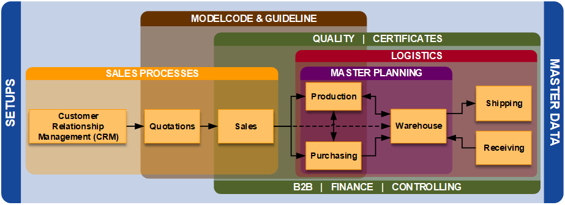
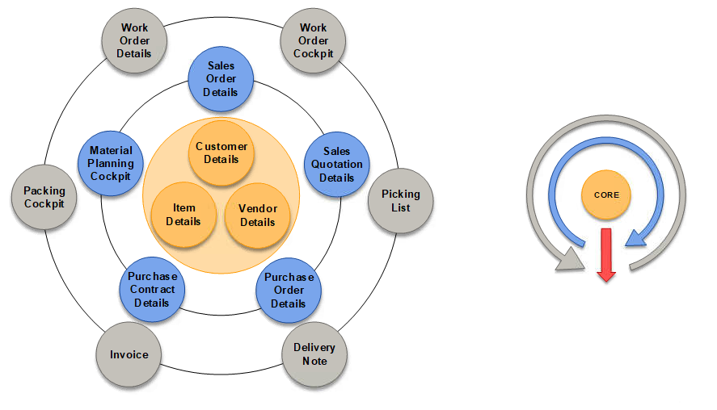

Text Functionality
Baseline Processes Overview

Explanation of single fields
Text code definition
The Text code definition form is used to create and manage the text types that are available from various forms in D365
Basic ► Setup ► Text management ► Text code definition
Tab "Overview"
Text code Character used to represent the text type. Used later in setup forms.
Description Description of the text type.
Shorttext format Used only: Internal – For internal texts Standard – Set the flag standard on the “Text Entry Form”
Control station Only for Klingenberg, high rack inventory
Export Office Only for Klingenberg, high rack inventory
Packing place Packing Cockpit
Infotext Only for internal information
Quotation Flag text types to output on the quotation form
Order confirmation Flag text types to output on the sales order confirmation
Delivery note Flag text types to output on the sales order delivery note
Invoice Flag text types to output on the sales order invoice
Prod-Paper Flag text types to output on the production papers
Purchase order Flag text types to output on the purchase order printout
Summary Not used at the moment
Picking list Flag text types to output on the picking list printout
Tab “General”
Displays a single-record view of the data shown on the overview tab.
Tab “Language Texts”
On the Language texts tab, define the text values to be used as labels for the text types in different languages. These languages will be used when the corresponding system language is in use.
Usage of text codes
The “Usage of text codes“ form is used to manage the usage of the text codes defined on the “Text code defi-nition” form. This controls which checkboxes will be listed on each text form. It does NOT control where the text is output.
Basic ► Setup ► Text management ► Usage of text codes
Tab “Overview”
Range Defines the form on which the text code will be available as an input option. List of forms is pre-defined in the system and includes:
- Quotation header
- Quotation line
- Sales header
- Sales order line
- Works order
- Purchase header
- Purchase line
- Client
- Vendor
- Item Inventory
- Contract header
- Contract line
- Internal request
Text code order Defines the sequence in which the various text types will be displayed on the forms.
Text code Defines the text code of the text type to be included on the form.
Standard Flagged text codes will be flagged by default on the text forms on which they are used. Generally, only the “S“ (General) text type is flagged.
Text position Selection is only available on the following forms: Customer text, vendor text, quotation header text, sales order header text, purchase order header text, purchase contract text and sales contract text.
Options are:
- --
- Head
- Footer
Tab “General”
Displays a single-record view of the data shown on the overview tab.
Text criteria
Text criteria are pre-defined text blocks which are used frequently. They are defined here so they don’t need to be manually keyed each time they are needed.
Area “Overview”
Key Code that represents the text block
Short description Description of the text block
Area “Texts”
National language Local language (system language)
Other language Optional secondary languages. Selectable via drop-down list of languages.
Functional Buttons
Button < Application > Opens the Appliance of texts form
Button < Copy and close > Copies the text from the selected text block and closes the texts form. The text can then be copied into a text field by clicking in the field and pressing “Ctrl+V”
Text output locations
The text entered on the various input forms is output to different locations, based on the definition of the text code on the “Textcode definition” form. This list indicates all of the output locations for text:
- Quotation
- Order confirmation
- Delivery note
- Invoice
- Prod-Paper
- Purchase order
- Summary
- Picking list
As general rule, the following image represents the text “flow” between the different D365 forms

The left picture represents the texts “layers” inside D365. It has a core area and overlaid areas from which texts are flowing through.
The right picture outlines the text flow from core and from overlaid areas. That means, the text “flows” from internal core to the outside layers. Also, it is possible to exchange texts between forms in same layer level.
Note
For texts in Quotation, Sales Order or Purchase Order, user should select the correct text position (Header or Footer) to get the text displayed